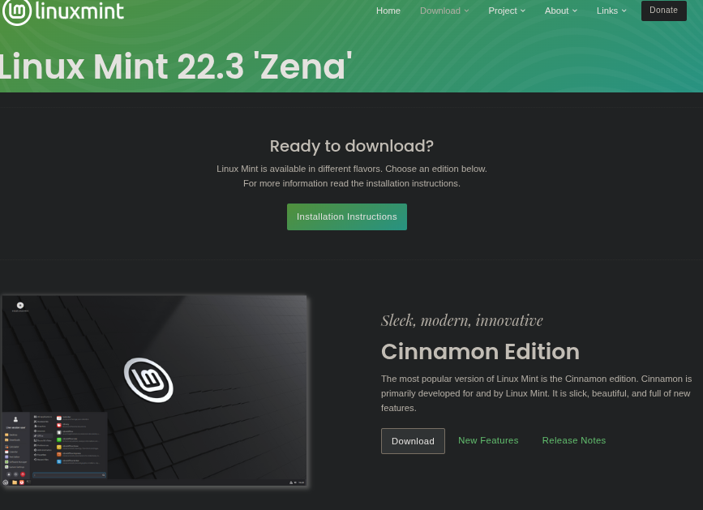
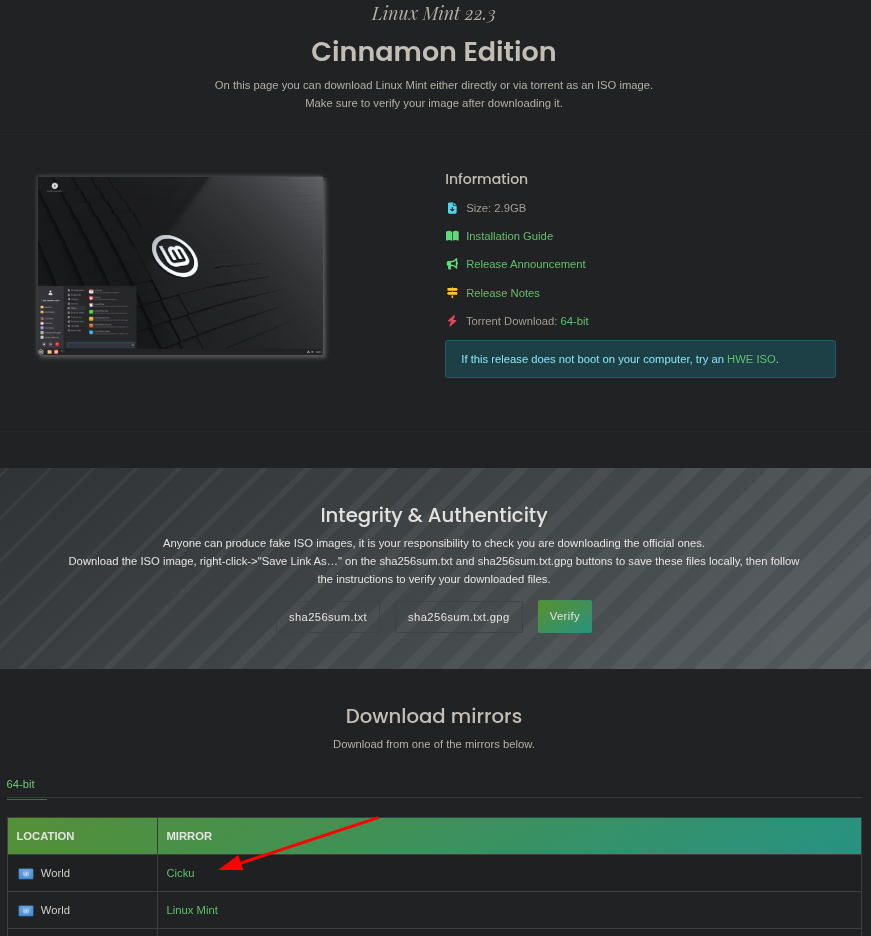
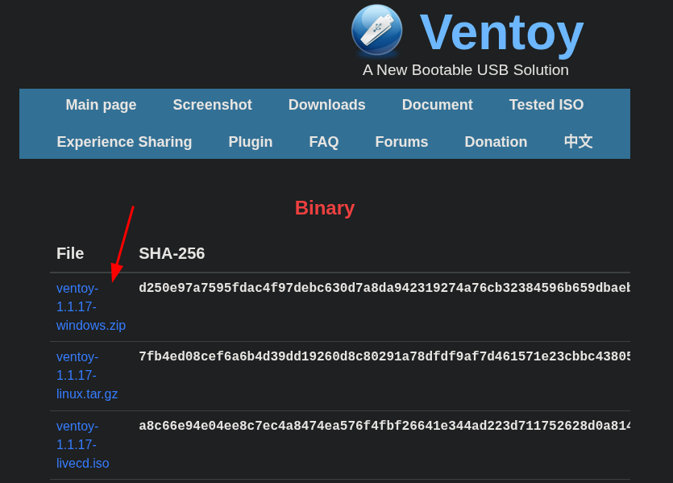
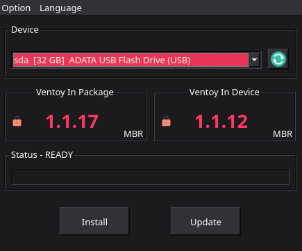
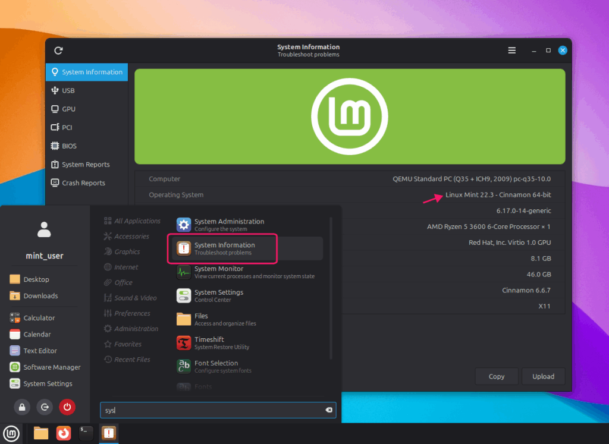
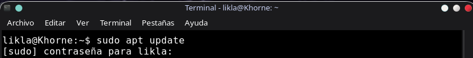
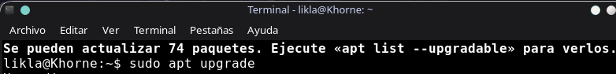
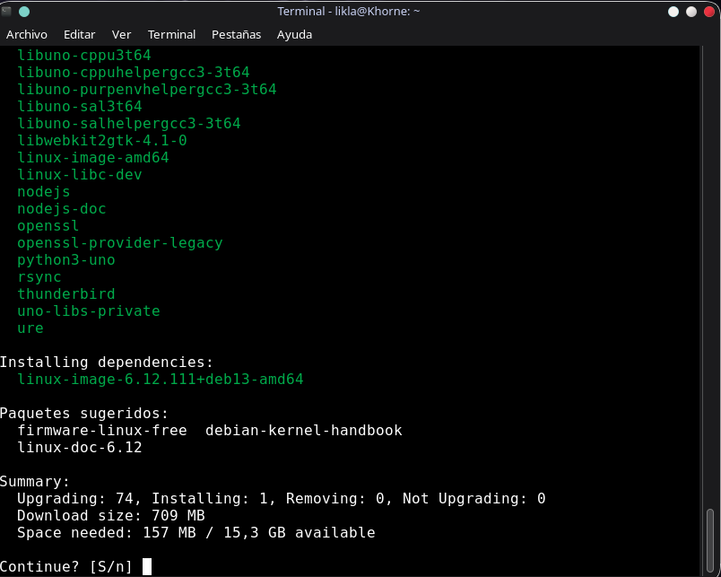

Visiten la página oficial de Linux mint y descargan la ISO (Preferiblemente de la versión cinnamon) Página de Linux Mint.

Después seleccionan la descarga global para una descarga a velocidad normal, o si prefieren la de su país si es que hay.

Ventoy es un programa para convertir una USB en una USB booteable, esto es lo que nos permitirá instalar Mint en
la PC.
La descarga de ventoy se encuentra en esta página Página de ventoy.

Abrimos el archivo de ventoy que siga la misma arquitectura de tu PC (Usualmente es x86_64). Seguidamente conectamos nuestra USB, clickeamos primero en Update y luego en Install.

Advertencia, convertir una USB a booteable requiere borrar todos los archivos dentro de una USB, asegúrense tener una USB que no contenga ningún archivo importante.
Aunque Ventoy se salta el secure boot es posible que este les de algún inconveniente, ese se salta a partir de la BIOS. En la mayoría de computadoras se entra a la BIOS reiniciando la PC y presionando seguidamente F2 pero esto depende del fabricante.
Ventoy es un programa que se activa automáticamente al reiniciar la PC (Tienen que mantener conectada la USB durante toda la instalación)
Linux Mint tiene una guía gráfica y automática para la instalación, seleccionen las configuraciones que vean más convenientes y preferiblemente no manipulen lo relacionado a particiones.

Actualización gráfica: Presionan la tecla Super(Nombre de la tecla windows en Linux) y escriben "informacion del sistema" o "sistema" si es que lo tienen de alguna manera (También pueden acceder por medio de configuraciones/preferencias) y les saltará un menú con los componentes del sistema operativo y el hardware, seguidamente clickean el botón actualizar/update.

Para versiones más viejas: La actualización se ejecuta por medio del símbolo de escudo en la barra inferior.
Actualización por la terminal: Buscan la terminal con la tecla "super" (Como se le llama a la tecla windows en Linux) y escriben "terminal" en su lanzador de programas, o ejecutan la terminal con la combinación de teclas ctrl + alt + t. Seguidamente escriben en la terminal sudo apt update para registrar el software más nuevo y luego sudo apt upgrade para actualizar el sistema.


